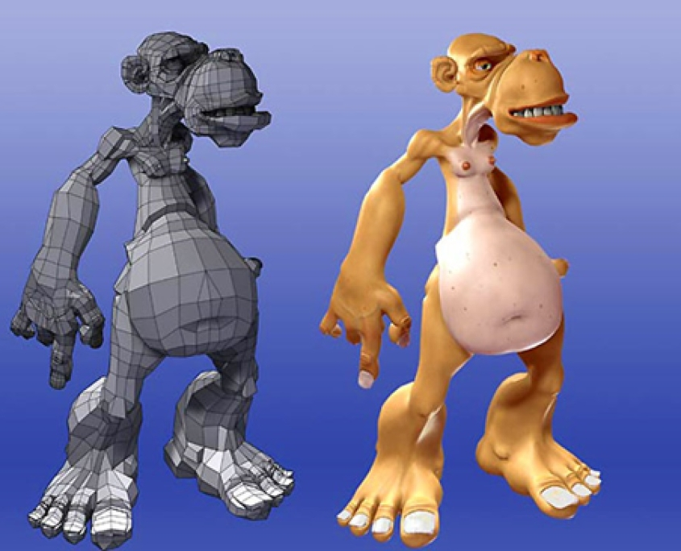
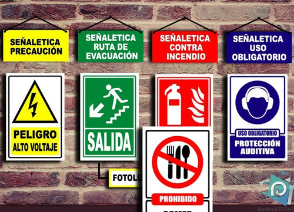

Esta asignatura es teórica práctica cuya finalidad es que los estudiantes puedan adquirir conocimientos sobre los elementos básicos del modelado 3D en Cinema4D, experimentando las técnicas desde la forma más simple, el color, texturas, dinámicas, etc. Analizando las bases del Modelado y su aplicación en ejercicios que enriquezcan la calidad conceptuar y técnica de cada estudiante.
Contenido
Con esta asignatura se espera contribuir en la formación profesional de los estudiantes para desarrollar su perfil en razón de las competencias de diseño para la web.
Contenido El branding personal es como me veo a mi mismo/a dentro de mi trabajo. Es la esencia de mi personalidad convertida en mi propia marca de una forma funcional y destacable.
Contenido
Historia del branding, ¿que es el branding?, ¿como cocinar un buen branding a la parrilla?
La asignatura apofta al perfil del diseñador en el mercado iaboral habilidades de integración y aplicación de diseño de procluctos y empaque, el proceso a seguir para el desarollo de nuevosproductos, y pone en práctica los conocimientos de materias relacionadas con el diseño digital mediante el desarrollo visual estético y funcionai del producto, generando en el diseñador las habilidades prácticas para el desarrollo de productos y la protección de 1a propiedad intelectual.
contenido
Brindar conocimientos teóricos y prácticos sobre los elementos gráñcos e icónicos en la conceptualízación y diseño de señalética pata diversos sectores y que los apliquen todos los procesos técnicos y legales vistos durante e1 desarrollo de la asignatura.
Contenido